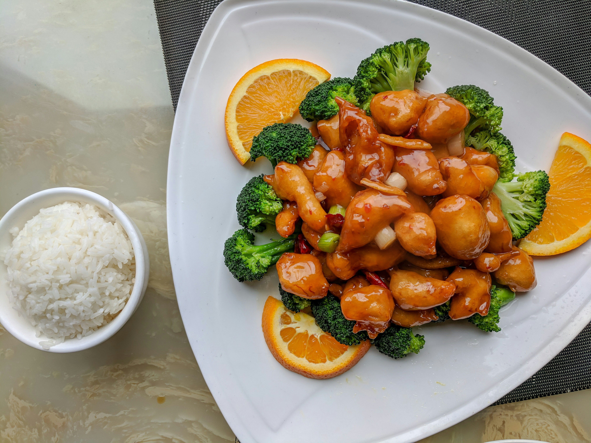

Home
Orange Chicken

Description
Orange chicken is a popular Chinese-American dish featuring crispy, bite-sized pieces of chicken coated in a sticky, sweet, and tangy orange sauce.
The chicken is typically deep-fried until golden and crunchy, then tossed in a vibrant glaze made from fresh orange juice, soy sauce, garlic, and a hint of ginger.
Bursting with citrus flavor and a touch of heat, this dish strikes the perfect balance between savory and sweet, making it a crowd-pleasing favorite served over steamed rice or noodles.
Ingredients
For Chicken:
- 1 lb (450g) boneless, skinless chicken thighs or breasts, cut into bite-sized pieces
- 1/2 cup cornstarch
- 1/2 cup all-purpose flour
- 1/2 teaspoon salt
- 1/4 teaspoon black pepper
- 2 eggs, beaten
- Vegetable oil (for frying)
For Sauce:
- 1/2 cup orange juice (preferably fresh)
- 1 tablespoon orange zest
- 1/3 cup granulated sugar
- 2 tablespoons soy sauce
- 1 tablespoon rice vinegar or white vinegar
- 1 clove garlic, minced
- 1 teaspoon grated fresh ginger (or 1/4 tsp ground ginger)
- 1 tablespoon cornstarch + 2 tablespoons water (for slurry, to thicken)
Steps
- Prepare the chicken:
- In a bowl, mix the cornstarch, flour, salt, and pepper.
- Dip each chicken piece into the beaten eggs, then coat it in the flour mixture. Shake off any excess.
- Fry the chicken:
- Heat about 1 to 2 inches of vegetable oil in a deep pan or wok over medium-high heat.
- Fry the chicken pieces in batches until golden brown and crispy (about 4 to 5 minutes per batch).
- Drain on paper towels and set aside.
- Make the orange sauce:
- In a small saucepan, combine orange juice, orange zest, sugar, soy sauce, vinegar, sesame oil (optional), garlic, and ginger.
- Bring to a simmer over medium heat.
- Mix the cornstarch and water in a small bowl to make a slurry, then slowly stir it into the sauce.
- Cook for 1 to 2 minutes until the sauce thickens.
- Combine and serve:
- Place the fried chicken in a large bowl or wok.
- Pour the hot orange sauce over the chicken and toss to coat evenly.
- Serve immediately over steamed rice or noodles. Garnish with green onions or sesame seeds if desired.